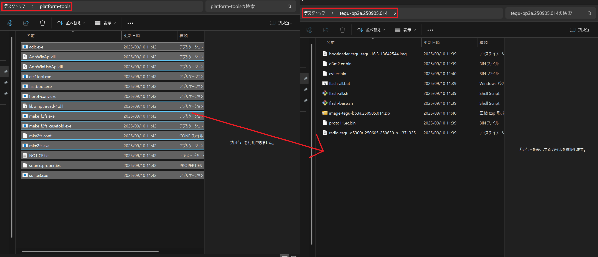
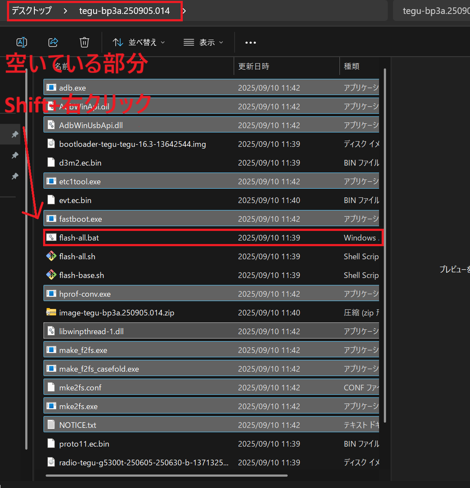
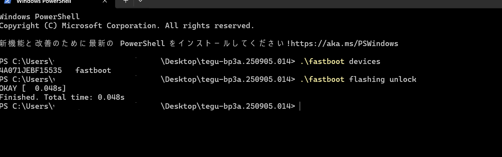

GrapheneOSの導入方法
1. セキュリティ特化のAndroid
1.GrapheneOSとは？
GrapheneOS は Google Pixel 向けの セキュリティとプライバシー最優先のAndroid系OS。無料で導入でき、対応Pixelを用意すれば誰でも利用できる。
普段のPixelをセキュリティ特化型として使えるようになり、攻撃への耐性やアプリ権限の細かい制御が強化されるため、情報漏洩リスクを大きく減らせる。
使い方の流れは、対応Pixelを用意して 公式Web Installer で導入するだけ。PCとケーブルを繋いでブラウザの指示に従うだけで、専門知識なしに安全に導入できます。これでセキュリティ強化済みのPixelとして使い始められる。
※導入時は初期化やブートローダー操作を伴い、データは消去されます。バックアップ必須であり、手順ミスによるリスクも理解して進めること。
2.GrapheneOSのメリットとデメリット
メリット
- ゼロデイ攻撃に強い防御力
- メモリ安全性の技術やOSの核となる部分（カーネル）の保護が強化され、悪意のあるアプリがシステムの根幹に侵入するのを防ぎ、未知の攻撃にも比較的耐性がある。
- アプリの挙動を細かく制御（「ネット通信を禁止」「センサー利用を無効化」など）
- コピー情報は自動で消去（クリップボードの内容は一定時間で自動消去）
- Googleサービスを選んで利用可能（Sandboxed Google Play）
- オープンソースによる透明性（バックドア混入リスクが極めて低い）
- Pixelハードを最大限活用（Titan Mチップ・セキュアブートなど）
- プロファイル分離で安全に使い分け（仕事用とプライベート用を完全分離）
デメリット
- Googleアシスタントが使えない
- Pixel独自の一部機能が制限（AIカメラ処理など）
- Google Playストアはそのまま使えず、Sandboxed Google Play や Aurora Store が必要
- 銀行アプリ・キャリア決済アプリなど一部アプリが動作しない
- 利便性よりセキュリティ重視の設計で、設定や管理に手間がかかる
- Pixel本体の保証は残るが、Google公式サポート対象外
3.通常アプリは使えるのか？
GrapheneOSでもLINEやYouTubeなど多くの一般的なアプリは利用できます。
アプリ入手方法
- Sandboxed Google Play：純正のGoogle PlayストアとGMSを利用可能。アプリは通常通り自動更新されます。
- Aurora Store：Googleアカウント不要でPlayストアのアプリを入手可能。ただし更新は手動チェックが必要。
- F-Droid：追跡や広告がないオープンソースアプリ専用ストア。
互換性の目安
- LINE・YouTube・Twitter → 問題なく利用可
- Gmail・Google Drive → Sandboxed経由で利用可
- 銀行アプリ・キャリア決済アプリ → ほぼ利用不可
- Play Integrity 必須ゲーム → 動作不可
おすすめできるユーザー層
- キャリアアプリや便利機能を手放してもよい人
- 連絡用途やSNSが中心の人
- 情報漏洩リスクを徹底的に下げたい人
※二段階認証アプリ（Google Authenticator / Aegis など）は必ずメインプロファイルに配置。
※銀行アプリやキャリア決済アプリはGoogle依存のためほぼ利用不可。
4.Pixel購入時に注意すべき点
- 新機種はすぐにGrapheneOS対応にならない場合がある（数日〜数週間）
- サポート期限の長いPixelを選ぶ
- SIMカード（nanoSIM / eSIM）対応確認
- 中古端末はサポート残期間・OEMロック解除可否を確認
- ストレージは128GB以上推奨
- Pixelハード保証は残るが、Google公式サポート対象外
※購入前に「対応機種・サポート期限・SIM対応・ストレージ容量・中古可否・保証範囲」を確認すること。
5.Pixelに戻せるのか？
戻すことは可能だが、必ずデータは全て消去される。
Android Flash Tool を使えばブラウザから戻せるため初心者向け。
コマンドで戻す場合はブートローダー再ロックが必要。文鎮化リスクあり。
6.まとめ
メリット：世界最高水準のセキュリティとプライバシー制御
デメリット：一部の便利機能や互換性を犠牲にする
GrapheneOSは「利便性より安全性を優先したい人」のための選択肢。
7.GrapheneOSの導入方法（概要）
必要なもの
- PC（Google Chrome / Chromium系推奨）
- Pixel端末（対応モデル）
- データ通信対応のUSBケーブル
Pixel側の準備
- 設定 → デバイス情報 → ビルド番号を7回タップして開発者モードON
- 設定 → システム → 開発者向けオプション → OEMロック解除をON
- ※USBデバッグは不要（Web Installerでは使用しません）
インストール手順（Web Installer）
- PCでGrapheneOS公式の Web Installer を開く
- 画面の指示に従い、①Unlock bootloader → ②Download release → ③Flash release を順にクリック
- 最後に ④Lock bootloader をクリックし、端末側でロックを許可
- ロック完了後、端末は自動で再起動 → 導入完了
⚠ 注意点
- 作業中はデータが全消去される
- ケーブルを抜かない／PCをスリープさせない
- 起動時の黄色警告は正常（GrapheneOSの仕様）
- ブートローダーは必ず最後にロックする（自動再起動で完了）
2. GrapheneOS 導入後
1.プロファイル分け（メインとサブ）
GrapheneOSの強みは ユーザープロファイル分離にあります。Windowsの「ユーザーアカウント」に近いイメージです。※なお、この挙動はAndroid標準の複数ユーザー機能による仕様で、GrapheneOS独自の制限ではありません。GrapheneOSではこの標準機能を 強化されたセキュリティ基盤上で活用できる点が特徴です。
メインプロファイル（オーナー）
- 電話番号・SMSは必ずここに紐づきます。
- 通知は常に届き、他のプロファイルとは完全に分離されます。
サブプロファイル
- 追加ユーザーとして新規セットアップ。アプリやデータは完全独立。
- 通知はメインと干渉せず、開いたときのみ反応します。
メリット
- ストレージ暗号化はプロファイル単位で強固。各ユーザーごとに暗号鍵が分かれます。
- メインを開いた状態ではサブのデータにアクセスできず、逆も同じです。
- サブでアプリが汚染されてもメインには一切影響がありません。
デメリット
- 写真や動画の保存場所が異なり、共有にはクラウドやUSB転送が必要。
- 基本的にプロファイルが切り替わっている間は、その環境の通知は届きません（※ただし設定や仕様により、サブ利用中にメインの電話やSMSの通知が画面上部に転送される機能はあります）。
- サブを閉じると、そのプロファイルのアプリは 完全に停止します（音楽再生やダウンロードも継続しません）。理由：安全のため完全分離する仕組みだからです。
- メインとサブの画面を同時に並べて表示（2画面分割など）することはできません。環境を切り替えて使用します。
【補足】通知の仕様について
GrapheneOSには、サブプロファイルの通知をメインプロファイルに転送する機能はありません。これはプロファイルの完全な分離を維持するための設計思想です。ただし、メインの電話・SMSなど一部の重要通知は、サブ利用中でも画面上部にインジケーターとして表示される場合があります。
作成方法
設定 → システム → 複数のユーザー → ユーザーを追加。名前をつけ（例：「ゲーム用」「実験用」）、今すぐ切り替えを選ぶと初期セットアップが始まります。
実用例
- メイン：仕事・連絡系アプリのみ（使用容量10〜20GB程度）
- サブ：ゲームや動画アプリを集中して入れる（容量消費を分離できる）
切り替え方法
通知バー右上のユーザーアイコン → プロファイル選択 → パスコード入力 → 切り替え完了。まるで別のスマホを開いたような感覚で利用できます。
※補足：独立した環境でも、物理的なストレージは共有。例えば128GBモデルのPixelなら、メインとサブ合わせて合計128GBを使います。
2.Google Playストアをどう使うか？
Sandboxed Google Play
- メリット：普通のAndroidと同じようにアプリを入れられる。銀行アプリやゲームの互換性が高まる。
- デメリット：Google関連のプロセスが動作するため、わずかにプライバシー妥協がある。ただし、システムの重要部分から隔離された『サンドボックス』内で動くため、GrapheneOS全体のセキュリティモデルは維持され、通常のAndroidよりははるかに安全です。
Aurora Store
Googleアカウント不要でPlayストアのアプリをダウンロードできる代替ストア。正規のAPKを取得するため安全性は高いが、自動更新がなく、更新が遅れる可能性があるので定期チェックが必要です。
実用的な使い分け
- メインプロファイル：Googleサービスなしで軽量・安全に運用。アプリはAurora Storeで導入。
- サブプロファイル：Google前提アプリ（銀行、LINEなど通知必須系）をSandboxed Google Play経由で利用。
通知の運用ポイント
- メインに置くべき：電話・SMS・LINE・会社メールなど即時通知が必要なアプリ
- サブに隔離すべき：SNS（X/Instagram/TikTok）、ゲーム、銀行アプリ、信頼性に不安のあるアプリ
- 通知が遅れると困るものはメインへ。それ以外はサブで十分。
3.導入方法
Sandboxed Google Play：
- 標準搭載アプリのApp Storeから「Google Play services」と「Google Play Store」をインストール。どちらか片方を入れれば両方揃います。
- 通常のAndroid同様にアプリを自動更新できますが、システム権限は持たないためGrapheneOSのセキュリティは維持されます。
Aurora Store：
- 標準ブラウザVanadiumでAurora公式配布ページ を開く。
- 「Created at」で最も新しい .apk をダウンロードし、インストール。
- 古いAPKは削除してストレージを節約可能。
Aurora Storeには「匿名」と「Googleログイン」モードがあります。基本は 匿名利用で十分です。アプリ側でGoogleログインするのは問題ありませんが、Aurora Store本体でGoogleログインするのは非推奨です。
4.日本語入力を有効にする（Gboard導入）
導入方法
- Sandboxed Google Play経由：Playストアから「Gboard」をインストール可能。通常のAndroidと同じように自動更新されます。
- Aurora Store経由：Googleアカウント不要で入手可能。ただし更新は手動で行う必要があります。
有効化手順
- 設定 → システム → 言語と入力
- オンスクリーンキーボード → キーボードの管理
- Google 日本語入力 (Gboard) をオンにする
- 文字入力時に地球マークを長押し → 「Google 日本語入力」を選択
Gboard以外にも OpenBoard や Fcitx5 for Android (Mozc) などのオープンソースIMEがありますが、初心者にはGboardが最も使いやすく安心です。
5.セキュリティソフトとVPN
セキュリティソフト（例：ESET）
- 原則不要：GrapheneOSは標準セキュリティが非常に強固であり、追加のセキュリティソフトは基本的に必要ありません。
- デメリット：常駐による電池消費・動作の重さに加え、アプリ自体が新たなリスク源となる可能性があります。
- 限定的な例外：銀行・課金・ゲーム専用のサブプロファイルで利用する場合のみ有効性があるケースがあります。
- 制約：標準ブラウザ「Vanadium」は非対応。Chromeなど一部のブラウザでのみ機能します。
結論：メインには不要。どうしても使う場合はサブのみで補助的に導入してください。
VPN
- 公共Wi-Fi利用が多い人は必須級。
- プロファイルごとに別々に動作可能。
- すべての通信を暗号化し、盗聴・改ざん対策に直結。
- No-Logポリシーのプロバイダーを選ぶことが重要。
まとめ
- VPNは全ユーザーに推奨（常用すべき基本設定）。
- セキュリティソフトは安心感が欲しい人向けに「サブ専用」で導入。
- セキュリティ強度を上げたいならまずVPN、その次に必要ならセキュリティソフト。
この運用なら「過剰に入れすぎず、必要十分な安全性」と「Google必須アプリの利便性」の両立が可能です。
3. Pixelに戻す方法（純正Androidへの復帰）
注意
（重要）この操作では端末内のデータがすべて消去されます。必ず事前にバックアップを取ってください。
書き込み中にケーブルを抜くと文鎮化（起動不能）する可能性があります。
最も安全な方法：Android Flash Tool（ブラウザ完結）
Google公式の「Android Flash Tool」を使うと、ブラウザだけで純正Androidに戻せます。2026年現在、最も安全で推奨される方法です。
必要なもの
- PC（Chrome / Chromium系ブラウザ）
- Pixel端末
- データ通信対応USBケーブル
Pixel側の準備
- 電源を切る
- 電源ボタン＋音量下を同時長押し → Fastbootモードで起動
- ※GrapheneOSには「OEMロック解除」メニューは存在しないため、設定画面での操作は不要です
戻す手順（Android Flash Tool）
- PCで「Android Flash Tool（Google公式）」を開く
- 画面の指示に従いPixelを接続 → 認識させる
- 導入するFactory Image（最新安定版）を選択
- 「Wipe Device（データ消去）」にチェックが入っていることを確認
- ※「Lock Bootloader（再ロック）」は最初はチェックを入れない（重要）
- 「Install Build」をクリック → 自動で書き込み開始
- 書き込み完了後、端末が起動するので初期設定画面まで進める
- 初期設定が完了したら、再度Fastbootモードに入り「Lock Bootloader」を実行（画面の指示に従う）
※ ブートローダーのロックは「OSが正常に起動した後」に行うのが最も安全です。
（上級者向け）手動で戻す方法（Platform-Tools）
コマンド操作に慣れている人向け。初心者は使用しないでください。
必要なもの
- Android Platform Tools（ADB/Fastboot）
- Pixel用Factory Image（機種とバージョンに対応）
手順
- USBでPixelをPCに接続
- フォルダで Shift + 右クリック → 「ターミナルで開く」
- 認識確認：
.\fastboot devices（PowerShell） / fastboot devices（cmd）
- ※GrapheneOSから戻す場合、ブートローダーは基本アンロック状態のため
fastboot flashing unlock は不要
- flash-all.bat（または flash-all.sh）を実行
- 完了後、Fastbootモードで
.\fastboot flashing lock（PowerShell）または fastboot flashing lock（cmd）
文鎮化した場合
再度Fastbootモードに入り、flash-all.batをやり直すことで復旧できる場合があります。それでもダメな場合は、XやRedditのr/GrapheneOSで相談してください。
【参考】上級者向け：Platform‑Tools を使った手動フラッシュ手順（非推奨）
※ この手順は上級者向けです。初心者は Android Flash Tool を使用してください。
必要なもの
Pixel端末側の準備
- 電源を切る
- 電源＋音量下を同時押し → Fastbootモードで起動
パソコン側の準備（ダウンロード＆展開）
- Platform‑Tools を展開
- Factory Image を展開
- 両方のフォルダを同じ場所にまとめる（例：デスクトップ）
フォルダ配置例：

アンロック & フラッシュ手順
- USBケーブルでPixelをPCに接続
- フォルダの空き領域で Shift + 右クリック → 「ターミナルで開く」

- 認識確認（PowerShell）：
.\fastboot devices
- 認識確認（cmd）：
fastboot devices
- ※ GrapheneOSから戻す場合、通常はアンロック済みのため
fastboot flashing unlock は不要
- flash-all.bat（macOS/Linuxは flash-all.sh）を実行

再ロック（重要）
- 書き込み完了後、Fastbootモードに入る
- PowerShell：
.\fastboot flashing lock
- cmd：
fastboot flashing lock
※ 再ロックしないと起動時に警告が表示され続けます。
文鎮化した場合
再度Fastbootモードに入り、flash-all.batをやり直すことで復旧できる場合があります。それでもダメな場合は、XやRedditの r/GrapheneOS で相談してください。